These functions facilitate the simulation of detections, arising from animal movement path(s), at passive acoustic telemetry receiver(s).
sim_detections(
.paths,
.arrays,
.calc_distance = terra::distance,
.lonlat = FALSE,
.calc_detection_pr = calc_detection_pr,
...,
.sim_obs = stats::rbinom,
.type = c("pairwise", "combinations"),
.return = c("array_id", "path_id", "timestep", "timestamp", "receiver_id", "dist",
"pr")
)
calc_detection_pr(.data, ...)
calc_detection_pr_logistic(.distance, .alpha = 4, .beta = -0.01, .gamma = 750)A data.table that defines movement path(s) (e.g., from sim_path_walk()). This should contain the following columns:
(optional) path_id---an integer vector that identifies paths (if the number of paths > 1);
timestep---an integer vector that defines time steps;
x,y---numeric vectors that define path coordinates;
A data.table that defines array(s) in which to simulate detections. This should contain the following columns:
(optional) array_id---an integer vector that identifies arrays (if the number of arrays > 1);
receiver_id---a vector that identifies receivers;
receiver_easting and receiver_northing or receiver_lon and receiver_lat (if .lonlat = TRUE)---numeric vectors that define receiver coordinates;
Distance arguments.
.calc_distance is a function that calculates distances between points along a selected path and receiver locations (for a specific array) (e.g., terra::distance()). This should accept:
a matrix of path coordinates (for a selected path);
a matrix of receiver coordinates (for a specific array);
lonlat, a logical variable that defines whether or not path/array coordinates are in longitude/latitude format (defined by .lonlat);
A function that calculates detection probabilities. A data.table is passed to this function that defines, for each path point, the distance to each corresponding receiver (in a column called dist). All other variables in .paths and .arrays are also available in this data.table. This makes it possible to specify a wide variety of detection probability models (see Examples). calc_detection_pr() function is an example that wraps calc_detection_pr_logistic(), which implements a standard, distance-dependent logistic detection probability model. Other arguments can be passed to .calc_detection_pr via ....
A function that simulates detections (0, 1), such as stats::rbinom(). This must accept three arguments:
n---an integer that defines the number of outcomes to simulate;
size---an integer that defines the number of trials (size = 1);
prob---a numeric vector that defines detection probabilities;
If .paths and .arrays contain multiple paths/arrays, .type is a character that defines whether or not to simulate detections for each path/array pair (.type = "pairwise") or for all combinations of paths/arrays (type = "combinations").
(optional) A character vector that defines column names retained in the output. NULL retains all columns in .paths and .arrays plus internally computed columns:
dist---the distance between points on the path(s) and the receiver(s) that recorded detections;
pr---the probability of detection at receivers that recorded detections;
The input for calc_detection_pr(), an example .calc_detection_pr function (see above).
Arguments for calc_detection_pr_logistic().
.distance is a numeric vector of distances;
.alpha is the intercept;
.beta is the coefficient for the effect of distance;
.gamma is a numeric vector of detection range(s);
sim_detections() returns a data.table with columns specified by .return.
sim_detections() implements the simulation. This requires the movement path(s) and array(s) in which detections are simulated to be provided as data.tables. If multiple paths and/or arrays are provided, the function simulates detections for each path/array pair (if .type = "pairwise") or for all combinations of arrays and paths (if .type = "combinations). Detections are simulated in three steps:
A distance function (.calc_distance) is used to calculate distances between points along a selected path and receiver(s):
A detection probability function (.calc_detection_pr) is used to calculate detection probabilities, given distances and other information in .paths and .arrays;
A random generation function (.sim_obs) is used to simulate detections (0, 1) at receivers;
In the output, only detections are retained (as in 'real-world' datasets).
These functions replace flapper::sim_detections() and flapper::get_detection_pr().
sim_* functions implement de novo simulation of movements and observations:
sim_helpers are convenience functions for simulations;
sim_array() simulates acoustic array(s);
sim_path_walk() simulates movement path(s) via a walk model;
sim_detections() simulates detection(s) at receivers;
pf_forward() implements forward simulation-based reconstruction of movement paths;
pf_backward_sampler() implements backward simulation-based reconstruction of movement paths;
skill functions compared simulated and reconstructed patterns to evaluate model skill;
#### Example (1): Implement function for a single path/array
# Simulate an example array & path
a <- sim_array(.n_array = 1L)
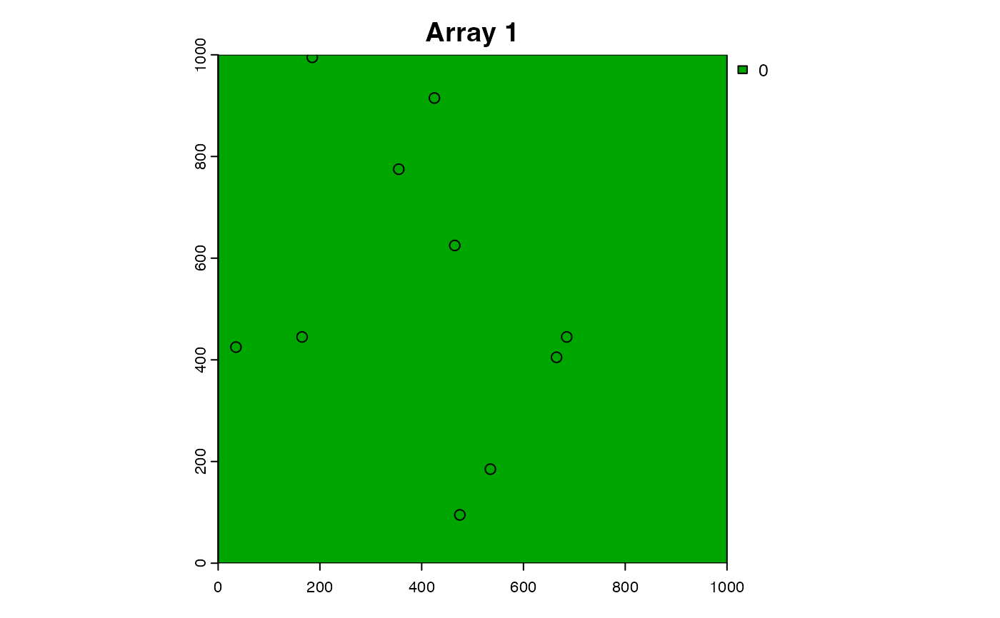
p <- sim_path_walk(.n_path = 1L)
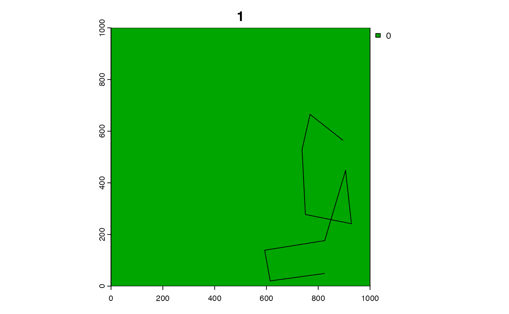
# Simulate detections
# * The function returns a data.table with the detections:
sim_detections(.paths = p, .arrays = a)
#> 'The output data.table' does not contain all required names. One or more of the following name(s) are missing: 'timestamp'.
#> array_id path_id timestep receiver_id dist pr
#> 1: 1 1 1 2 140.35669 0.93063167
#> 2: 1 1 1 5 190.26298 0.89064732
#> 3: 1 1 2 2 51.23063 0.97033558
#> 4: 1 1 2 5 93.94764 0.95523469
#> 5: 1 1 2 8 307.41191 0.71623885
#> 6: 1 1 3 1 634.34566 0.08758728
#> 7: 1 1 3 2 122.72925 0.94118305
#> 8: 1 1 3 5 73.29514 0.96328092
#> 9: 1 1 3 8 319.89842 0.69019172
#> 10: 1 1 4 2 345.56757 0.63281780
#> 11: 1 1 4 4 424.39878 0.43930385
#> 12: 1 1 4 8 273.98266 0.77905596
#> 13: 1 1 5 2 328.77929 0.67088866
#> 14: 1 1 5 4 365.76592 0.58475902
#> 15: 1 1 5 5 301.13803 0.72881521
#> 16: 1 1 5 9 267.96172 0.78924538
#> 17: 1 1 6 2 428.41225 0.42944338
#> 18: 1 1 6 4 236.44020 0.83693506
#> 19: 1 1 6 5 412.86927 0.46787115
#> 20: 1 1 6 8 137.22902 0.93262378
#> 21: 1 1 6 9 132.94770 0.93526471
#> 22: 1 1 7 4 359.20673 0.60059209
#> 23: 1 1 7 6 441.05244 0.39878639
#> 24: 1 1 7 7 354.82840 0.61104716
#> 25: 1 1 7 8 193.54639 0.88740819
#> 26: 1 1 7 9 289.16477 0.75182179
#> 27: 1 1 7 10 374.43166 0.56357488
#> 28: 1 1 8 1 415.32343 0.46176620
#> 29: 1 1 8 2 339.88280 0.64592439
#> 30: 1 1 8 3 306.43741 0.71821526
#> 31: 1 1 8 5 374.67689 0.56297162
#> 32: 1 1 8 6 372.55069 0.56819562
#> 33: 1 1 8 8 239.03824 0.83335829
#> 34: 1 1 8 9 442.69401 0.39485725
#> 35: 1 1 8 10 569.04426 0.15571764
#> 36: 1 1 9 1 341.87225 0.64136130
#> 37: 1 1 9 3 88.31044 0.95758432
#> 38: 1 1 9 6 146.15855 0.92679133
#> 39: 1 1 9 7 427.16333 0.43250616
#> 40: 1 1 9 8 448.43983 0.38121408
#> 41: 1 1 10 1 359.33193 0.60029171
#> 42: 1 1 10 3 88.65245 0.95744519
#> 43: 1 1 10 5 727.27128 0.03651926
#> 44: 1 1 10 6 35.41414 0.97456484
#> array_id path_id timestep receiver_id dist pr
#### Example (2): Use lon/lat coordinates
r <- dat_gebco()
r <- terra::project(r, "EPSG:4326")
p <- sim_path_walk(r, .lonlat = TRUE, .n_step = 1000, .n_path = 1L)
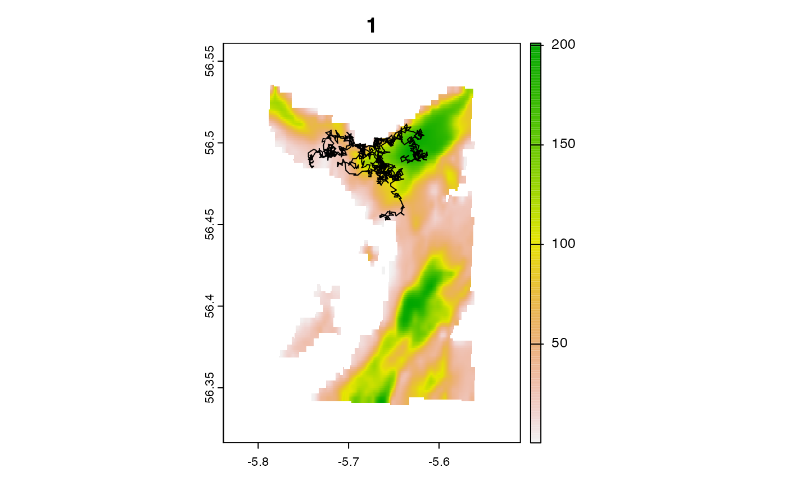
a <- sim_array(r, .lonlat = TRUE, .n_receiver = 100, .n_array = 1L)
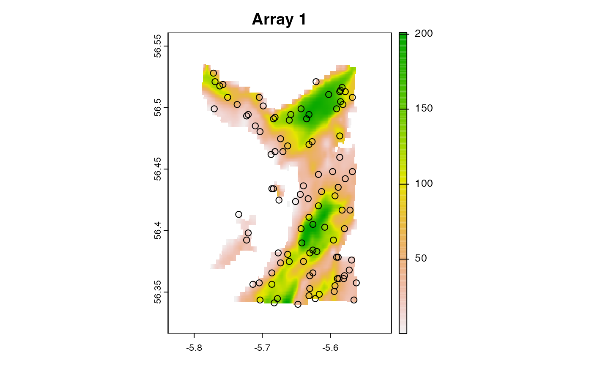
sim_detections(.paths = p, .arrays = a, .lonlat = TRUE)
#> 'The output data.table' does not contain all required names. One or more of the following name(s) are missing: 'timestamp'.
#> array_id path_id timestep receiver_id dist pr
#> 1: 1 1 213 34 470.4448 0.33082672
#> 2: 1 1 228 34 378.1283 0.55446227
#> 3: 1 1 230 34 393.5149 0.51620709
#> 4: 1 1 231 34 604.4990 0.11455958
#> 5: 1 1 241 74 325.3034 0.67851726
#> ---
#> 247: 1 1 891 34 692.9633 0.05070798
#> 248: 1 1 986 34 440.6207 0.39982184
#> 249: 1 1 988 34 449.6857 0.37827947
#> 250: 1 1 994 34 443.1461 0.39377753
#> 251: 1 1 1000 34 262.1159 0.79880485
#### Example (3): Customise the distance function
# E.g., use a shortest-distances function
# See ?cppRouting::get_distance_matrix for one option.
#### Example (4): Customise the detection probability function
# Re-simulate arrays and paths
a <- sim_array(.n_array = 1L)
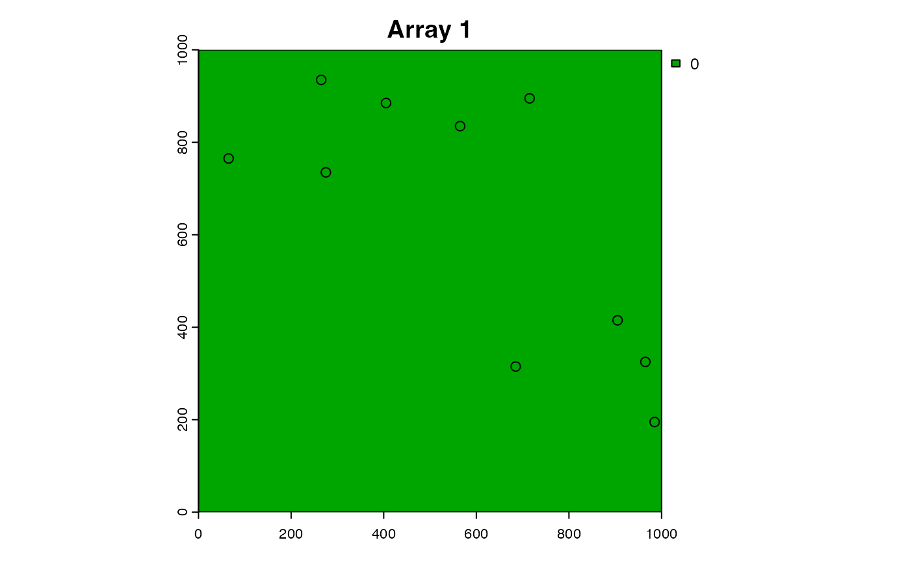
p <- sim_path_walk(.n_path = 1L)
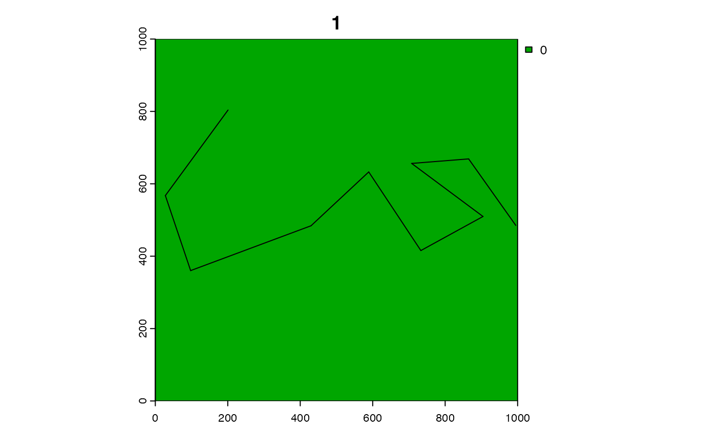
# Customise the default via .alpha/.beta/.gamma constants
# * If .gamma (detection range) parameter = zero, we get zero detections
dist <- 1:1000
sim_detections(.paths = p, .arrays = a, .gamma = 0)
#> 'The output data.table' does not contain all required names. One or more of the following name(s) are missing: 'timestamp'.
#> Warning: No detections generated.
#> Empty data.table (0 rows and 6 cols): array_id,path_id,timestep,receiver_id,dist,pr
# E.g., detection probability is perfect, we get detections at every receiver
plot(dist, calc_detection_pr_logistic(dist, .alpha = Inf, .beta = 1, .gamma = Inf))
sim_detections(.paths = p, .arrays = a, .alpha = Inf, .beta = 1, .gamma = Inf)
#> Warning: Column(s) in `.data` are being replaced: `receiver_x`, `receiver_y`.
#> 'The output data.table' does not contain all required names. One or more of the following name(s) are missing: 'timestamp'.
#> array_id path_id timestep receiver_id dist pr
#> 1: 1 1 1 1 282.84271 1
#> 2: 1 1 1 2 616.11687 1
#> 3: 1 1 1 3 310.16125 1
#> 4: 1 1 1 4 288.61739 1
#> 5: 1 1 1 5 704.34367 1
#> 6: 1 1 1 6 473.81431 1
#> 7: 1 1 1 7 278.02878 1
#> 8: 1 1 1 8 694.04611 1
#> 9: 1 1 1 9 777.81746 1
#> 10: 1 1 1 10 270.18512 1
#> 11: 1 1 2 1 157.33636 1
#> 12: 1 1 2 2 737.01172 1
#> 13: 1 1 2 3 306.15670 1
#> 14: 1 1 2 4 416.01637 1
#> 15: 1 1 2 5 763.43533 1
#> 16: 1 1 2 6 587.34840 1
#> 17: 1 1 2 7 167.07250 1
#> 18: 1 1 2 8 779.39462 1
#> 19: 1 1 2 9 847.78747 1
#> 20: 1 1 2 10 221.98727 1
#> 21: 1 1 3 1 141.84657 1
#> 22: 1 1 3 2 919.53327 1
#> 23: 1 1 3 3 288.11242 1
#> 24: 1 1 3 4 581.34730 1
#> 25: 1 1 3 5 780.46244 1
#> 26: 1 1 3 6 774.41237 1
#> 27: 1 1 3 7 27.05615 1
#> 28: 1 1 3 8 838.75014 1
#> 29: 1 1 3 9 878.70819 1
#> 30: 1 1 3 10 349.54866 1
#> 31: 1 1 4 1 192.81715 1
#> 32: 1 1 4 2 759.58006 1
#> 33: 1 1 4 3 230.59083 1
#> 34: 1 1 4 4 418.38246 1
#> 35: 1 1 4 5 697.88364 1
#> 36: 1 1 4 6 619.57608 1
#> 37: 1 1 4 7 136.33788 1
#> 38: 1 1 4 8 725.51005 1
#> 39: 1 1 4 9 785.97412 1
#> 40: 1 1 4 10 298.24419 1
#> 41: 1 1 5 1 100.26047 1
#> 42: 1 1 5 2 789.21995 1
#> 43: 1 1 5 3 421.76306 1
#> 44: 1 1 5 4 503.10180 1
#> 45: 1 1 5 5 888.33877 1
#> 46: 1 1 5 6 627.58173 1
#> 47: 1 1 5 7 212.02170 1
#> 48: 1 1 5 8 903.51572 1
#> 49: 1 1 5 9 973.11701 1
#> 50: 1 1 5 10 128.58284 1
#> 51: 1 1 6 1 343.14147 1
#> 52: 1 1 6 2 560.69905 1
#> 53: 1 1 6 3 516.04480 1
#> 54: 1 1 6 4 345.44011 1
#> 55: 1 1 6 5 892.81034 1
#> 56: 1 1 6 6 392.86998 1
#> 57: 1 1 6 7 415.50332 1
#> 58: 1 1 6 8 857.26018 1
#> 59: 1 1 6 9 956.28364 1
#> 60: 1 1 6 10 174.80003 1
#> 61: 1 1 7 1 167.29671 1
#> 62: 1 1 7 2 834.36118 1
#> 63: 1 1 7 3 228.93588 1
#> 64: 1 1 7 4 491.32225 1
#> 65: 1 1 7 5 716.82041 1
#> 66: 1 1 7 6 693.82663 1
#> 67: 1 1 7 7 64.67402 1
#> 68: 1 1 7 8 761.75557 1
#> 69: 1 1 7 9 810.77495 1
#> 70: 1 1 7 10 328.06058 1
#> 71: 1 1 8 1 321.24264 1
#> 72: 1 1 8 2 660.15269 1
#> 73: 1 1 8 3 587.18946 1
#> 74: 1 1 8 4 469.44147 1
#> 75: 1 1 8 5 998.64068 1
#> 76: 1 1 8 6 489.19780 1
#> 77: 1 1 8 7 429.96016 1
#> 78: 1 1 8 8 973.66558 1
#> 79: 1 1 8 9 1067.49709 1
#> 80: 1 1 8 10 102.67510 1
#> 81: 1 1 9 1 261.18315 1
#> 82: 1 1 9 2 744.69096 1
#> 83: 1 1 9 3 578.92039 1
#> 84: 1 1 9 4 531.32746 1
#> 85: 1 1 9 5 1018.52667 1
#> 86: 1 1 9 6 574.17347 1
#> 87: 1 1 9 7 386.64346 1
#> 88: 1 1 9 8 1008.83797 1
#> 89: 1 1 9 9 1094.10139 1
#> 90: 1 1 9 10 50.90770 1
#> 91: 1 1 10 1 458.90666 1
#> 92: 1 1 10 2 482.05916 1
#> 93: 1 1 10 3 616.56629 1
#> 94: 1 1 10 4 350.76936 1
#> 95: 1 1 10 5 953.50210 1
#> 96: 1 1 10 6 310.89125 1
#> 97: 1 1 10 7 533.91641 1
#> 98: 1 1 10 8 896.62337 1
#> 99: 1 1 10 9 1006.70918 1
#> 100: 1 1 10 10 268.23311 1
#> array_id path_id timestep receiver_id dist pr
# Customise the default function via receiver-specific parameters
a$receiver_range <- runif(nrow(a), 100, 500)
calc_dpr <- function(.data) {
calc_detection_pr_logistic(.distance = .data$dist,
.alpha = 2.5, .beta = -0.02,
.gamma = .data$receiver_range)
}
sim_detections(.paths = p, .arrays = a, .calc_detection_pr = calc_dpr)
#> Warning: Column(s) in `.data` are being replaced: `receiver_x`, `receiver_y`.
#> 'The output data.table' does not contain all required names. One or more of the following name(s) are missing: 'timestamp'.
#> array_id path_id timestep receiver_id dist pr
#> 1: 1 1 2 1 157.33636 0.3437274
#> 2: 1 1 3 1 141.84657 0.4165551
#> 3: 1 1 3 7 27.05615 0.8764114
#> 4: 1 1 4 7 136.33788 0.4435523
#> 5: 1 1 5 1 100.26047 0.6212343
# Use a different model that uses information in .arrays/.paths
# * E.g., a logistic model that depends on distance & receiver type
a$receiver_type <- sample(c(0, 1), nrow(a), replace = TRUE)
.calc_dpr <- function(.distance, .receiver_type,
.alpha = 2.5,
.beta_1 = -0.02, .beta_2 = 2,
.gamma = 500) {
pr <- stats::plogis(.alpha + .beta_1 * .distance + .beta_2 * .receiver_type)
pr[.distance > .gamma] <- 0
pr
}
dist <- 1:500
plot(dist, .calc_dpr(dist, 0), type = "l")
lines(dist, .calc_dpr(dist, 1), col = "red")
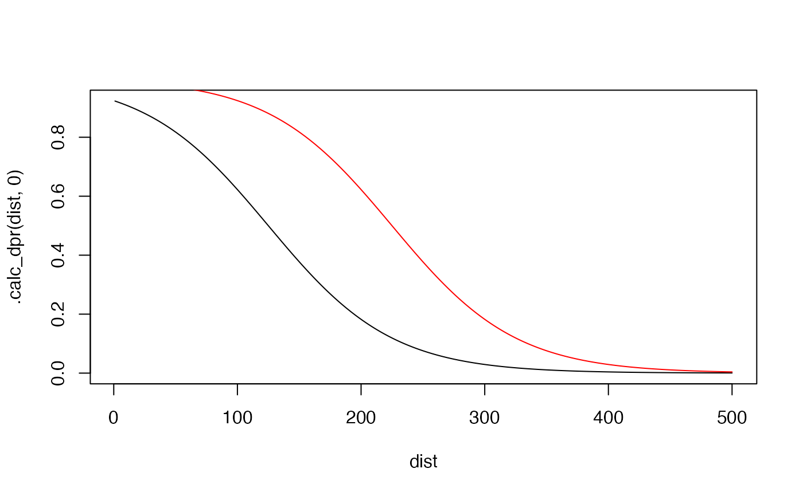
calc_dpr <- function(.data) {
.calc_dpr(.distance = .data$dist, .receiver_type = .data$receiver_type)
}
sim_detections(.paths = p, .arrays = a, .calc_detection_pr = calc_dpr)
#> Warning: Column(s) in `.data` are being replaced: `receiver_x`, `receiver_y`.
#> 'The output data.table' does not contain all required names. One or more of the following name(s) are missing: 'timestamp'.
#> array_id path_id timestep receiver_id dist pr
#> 1: 1 1 3 1 141.84657 0.41655505
#> 2: 1 1 3 3 288.11242 0.03688924
#> 3: 1 1 3 7 27.05615 0.87641136
#> 4: 1 1 4 7 136.33788 0.44355229
#> 5: 1 1 5 7 212.02170 0.14925782
#> 6: 1 1 7 7 64.67402 0.76968254
#> 7: 1 1 9 10 50.90770 0.81485125
#### Example (5): Customise simulation function
# extraDistr::rbern() v.1.10.0 is equivalent to rbinom with size = 1 (& a bit faster!)
# if (rlang::is_installed("extraDistr")) {
# sim_obs <- function(n = 1, size = NULL, prob) {
# extraDistr::rbern(n = n, prob = prob)
# }
# sim_detections(.paths = p, .arrays = a, .sim_obs = sim_obs)
# }
#### Example (6): Handle multiple paths/arrays
# Simulate observations between each array/path pair
a <- sim_array(.n_array = 2L)
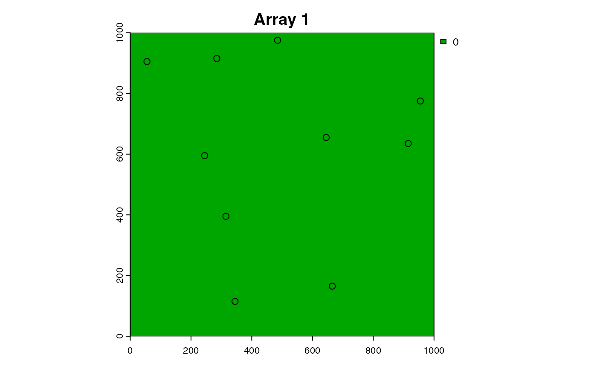
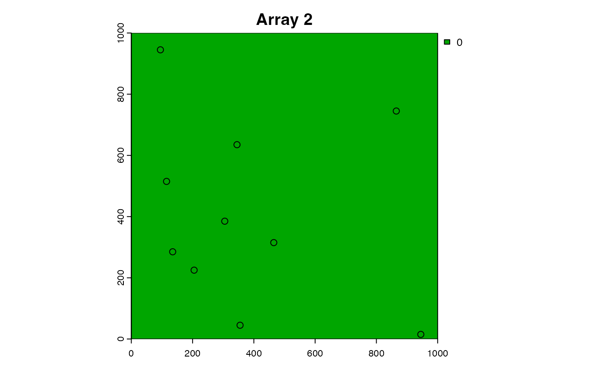
p <- sim_path_walk(.n_path = 2L)
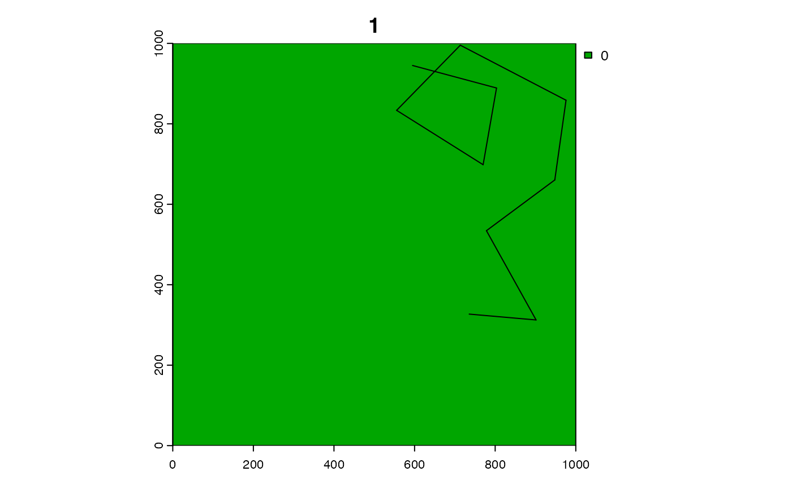
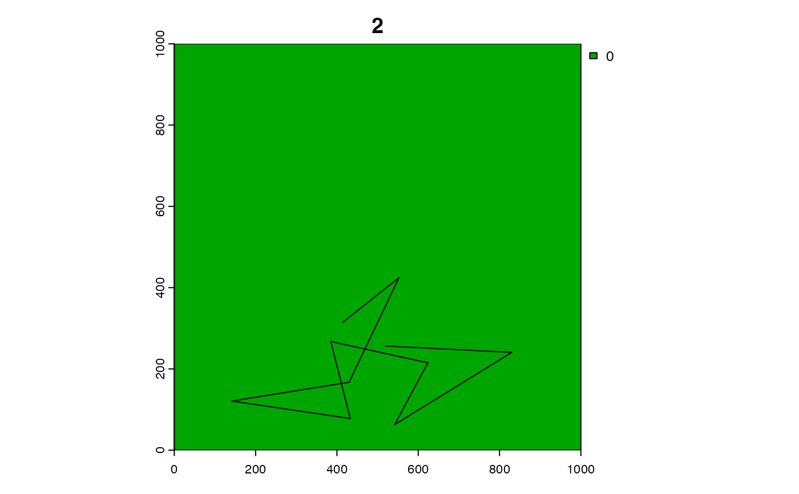
sim_detections(.path = p, .array = a, .type = "pairwise")
#> 'The output data.table' does not contain all required names. One or more of the following name(s) are missing: 'timestamp'.
#> 'The output data.table' does not contain all required names. One or more of the following name(s) are missing: 'timestamp'.
#> array_id path_id timestep receiver_id dist pr
#> 1: 1 1 1 1 198.49433 0.88236889
#> 2: 1 1 1 3 421.07007 0.44751885
#> 3: 1 1 1 4 219.54498 0.85870192
#> 4: 1 1 1 5 170.29386 0.90863337
#> 5: 1 1 1 6 449.44410 0.37884794
#> 6: 1 1 1 7 338.37849 0.64935725
#> 7: 1 1 1 8 640.31242 0.08293477
#> 8: 1 1 1 10 531.50729 0.21163920
#> 9: 1 1 2 4 416.43375 0.45900785
#> 10: 1 1 2 5 386.76306 0.53304411
#> 11: 1 1 2 7 184.81721 0.89583947
#> 12: 1 1 3 2 175.49966 0.90421866
#> 13: 1 1 3 3 218.61805 0.85982287
#> 14: 1 1 3 8 272.73223 0.78120077
#> 15: 1 1 4 2 360.42665 0.59766216
#> 16: 1 1 4 3 357.51412 0.60464532
#> 17: 1 1 4 7 560.41985 0.16739563
#> 18: 1 1 4 8 100.10681 0.95252585
#> 19: 1 1 5 1 370.94488 0.57213107
#> 20: 1 1 5 2 148.85310 0.92494194
#> 21: 1 1 5 3 83.05714 0.95966747
#> 22: 1 1 5 7 287.33029 0.75522884
#> 23: 1 1 5 8 403.76837 0.49058020
#> 24: 1 1 6 2 254.93575 0.81009730
#> 25: 1 1 6 3 188.13650 0.89270125
#> 26: 1 1 6 7 242.32251 0.82874728
#> 27: 1 1 7 1 180.30089 0.89997899
#> 28: 1 1 7 2 160.69407 0.91629651
#> 29: 1 1 7 3 158.62779 0.91786772
#> 30: 1 1 7 7 56.98510 0.96863360
#> 31: 1 1 8 1 222.17891 0.85547581
#> 32: 1 1 8 2 453.16859 0.37012377
#> 33: 1 1 8 4 288.65616 0.75276958
#> 34: 1 1 8 7 287.15433 0.75555398
#> 35: 1 1 8 9 516.04046 0.23859377
#> 36: 1 1 9 1 100.73041 0.95224306
#> 37: 1 1 9 4 261.00277 0.80058782
#> 38: 1 1 9 5 298.88250 0.73325003
#> 39: 1 1 9 6 588.92718 0.13132752
#> 40: 1 1 9 7 218.48656 0.85998127
#> 41: 1 1 9 9 479.58367 0.31091680
#> 42: 1 1 10 1 232.38467 0.84239449
#> 43: 1 1 10 2 312.13058 0.70655156
#> 44: 1 1 10 3 303.03529 0.72504916
#> 45: 1 1 10 4 527.93005 0.21766932
#> 46: 1 1 10 5 566.96965 0.15846465
#> 47: 1 1 10 7 119.58377 0.94290033
#> 48: 2 2 1 2 80.62258 0.96059932
#> 49: 2 2 1 3 439.31765 0.40295285
#> 50: 2 2 1 10 260.19224 0.80187866
#> 51: 2 2 2 6 235.19337 0.83862953
#> 52: 2 2 2 8 175.81917 0.90394159
#> 53: 2 2 2 10 361.51463 0.59504322
#> 54: 2 2 3 1 273.49491 0.77989437
#> 55: 2 2 3 9 459.18475 0.35621106
#> 56: 2 2 3 10 247.16116 0.82177040
#> 57: 2 2 4 1 116.96924 0.94429178
#> 58: 2 2 4 5 739.12470 0.03257014
#> 59: 2 2 5 1 379.04781 0.55218969
#> 60: 2 2 5 2 220.87835 0.85707636
#> 61: 2 2 5 4 349.14621 0.62446366
#> 62: 2 2 5 6 344.90630 0.63435297
#> 63: 2 2 5 10 250.52112 0.81679596
#> 64: 2 2 6 2 173.04434 0.90632415
#> 65: 2 2 6 6 546.96696 0.18699284
#> 66: 2 2 6 10 116.21976 0.94468474
#> 67: 2 2 7 1 358.96238 0.60117809
#> 68: 2 2 7 2 172.45840 0.90682043
#> 69: 2 2 7 6 406.64155 0.48340223
#> 70: 2 2 7 8 285.27728 0.75900408
#> 71: 2 2 7 10 194.19158 0.88676194
#> 72: 2 2 8 1 201.03010 0.87971129
#> 73: 2 2 8 2 486.51140 0.29627200
#> 74: 2 2 8 9 368.24527 0.57872639
#> 75: 2 2 8 10 302.71865 0.72567993
#> 76: 2 2 9 1 285.63040 0.75835759
#> 77: 2 2 9 9 251.13900 0.81586956
#> 78: 2 2 9 10 449.73551 0.37816244
#> 79: 2 2 10 9 202.87878 0.87774126
#> array_id path_id timestep receiver_id dist pr
# Simulate observations for all arrays/path combinations
a <- sim_array(.n_array = 2L)
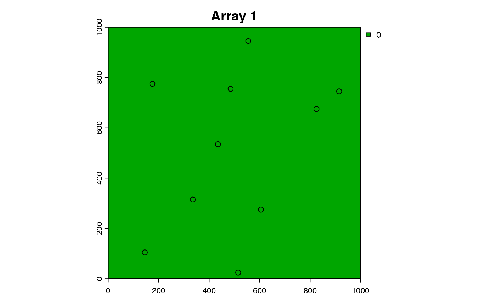
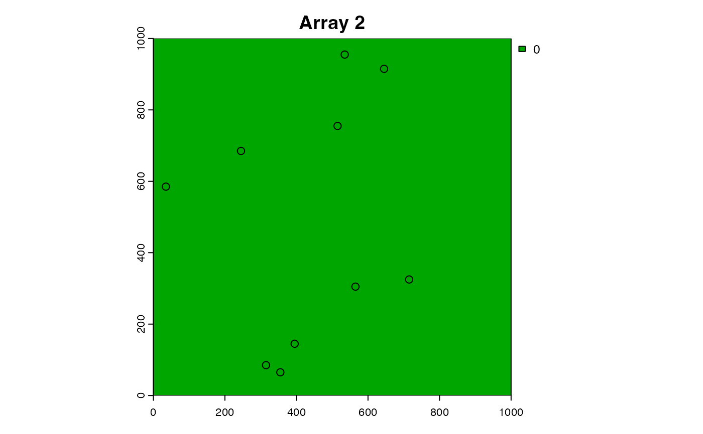
p <- sim_path_walk(.n_path = 3L)
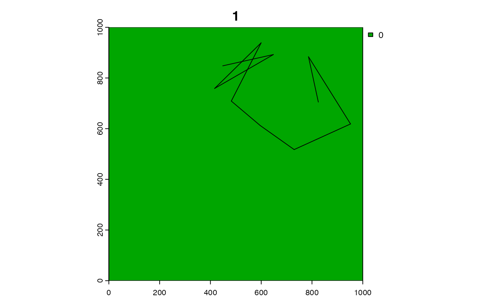
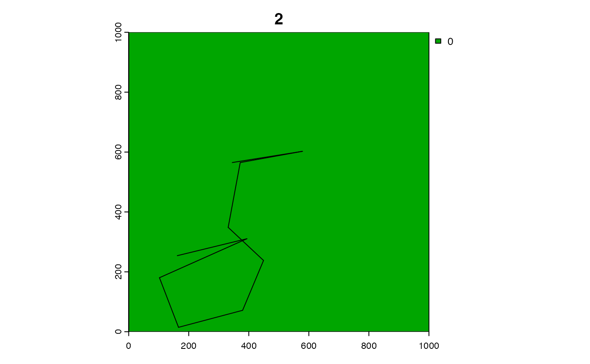
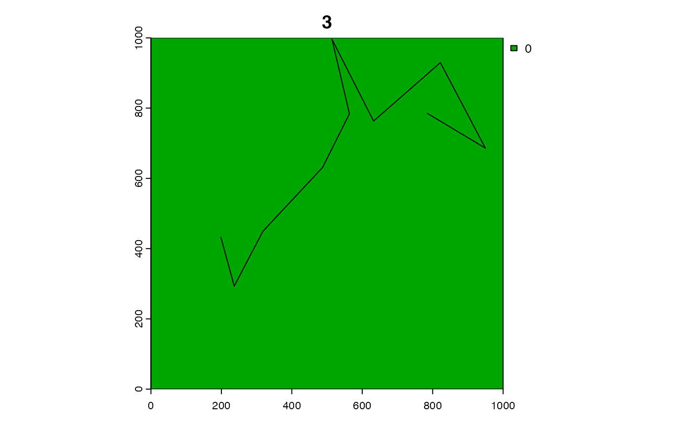
sim_detections(.paths = p, .arrays = a, .type = "combinations")
#> 'The output data.table' does not contain all required names. One or more of the following name(s) are missing: 'timestamp'.
#> 'The output data.table' does not contain all required names. One or more of the following name(s) are missing: 'timestamp'.
#> 'The output data.table' does not contain all required names. One or more of the following name(s) are missing: 'timestamp'.
#> 'The output data.table' does not contain all required names. One or more of the following name(s) are missing: 'timestamp'.
#> 'The output data.table' does not contain all required names. One or more of the following name(s) are missing: 'timestamp'.
#> 'The output data.table' does not contain all required names. One or more of the following name(s) are missing: 'timestamp'.
#> array_id path_id timestep receiver_id dist pr
#> 1: 1 1 1 4 487.03183 0.2951881
#> 2: 1 1 1 5 72.11103 0.9636975
#> 3: 1 1 1 10 230.00000 0.8455347
#> 4: 1 1 2 4 496.30723 0.2762635
#> 5: 1 1 2 5 194.60887 0.8863422
#> ---
#> 178: 2 3 10 1 351.98474 0.6177839
#> 179: 2 3 10 2 287.01682 0.7558079
#> 180: 2 3 10 3 192.93067 0.8880219
#> 181: 2 3 10 6 191.69296 0.8892468
#> 182: 2 3 10 9 235.52903 0.8381748